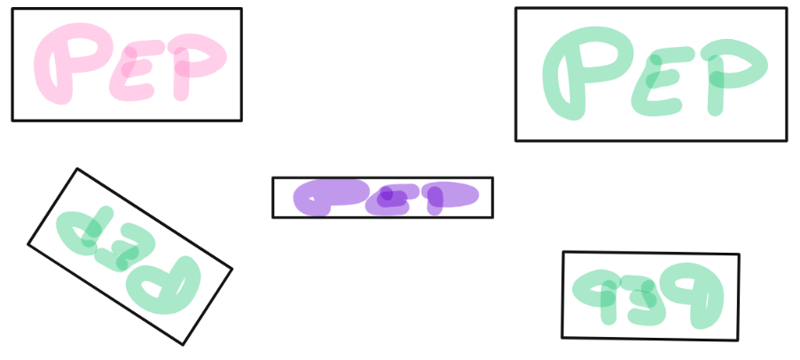

Què vol dir això de la Semblança?
En aquest tema, us avorrireu de la paraula semblança. Però, què vol dir això?
Abans de dir-ho, fixa't a la següent imatge. Un (o més) dels rectangles no encaixa amb la resta, sabries dir quin?

Molt bé! És el que posa Pep. Però, una mica més en sèrio, és el que està en color lila. Per què? Perquè no té la mateixa forma que els altres (està aixafat).
Anem a donar una primera definició important!
| Dues figures són semblants si tenen la mateixa forma. (podem convertir una en l'altra mitjançant zooms, girs o miralls) |
|
Es refereixen a ampliacions i reduccions (però sempre tant horitzontals com verticals, mai només d'un, com ha passat a la figura lila). |
|
Matemàticament, el terme correcte és el de Rotació. Quan rotem una figura, sempre mantè la mateixa orientació. (el Pep que hi ha en diagonal continua llegint-se de esquerra a dreta, però primer hem de girar el cap. En canvi el que hi ha la 'esquina dreta està escrit a l'inrevès) |
|
Quan fem efecte mirall, matemàticament, el terme correcte és una Simetria. Quan es fa una simetria, la figura resultat té diferent orientació. |
Molt bé, ja es comença a entendre més bé. Però, i què si són semblants? Serveix d'alguna cosa? O ja s'ha acabat tot?
| Dues figures semblants tenen longituds proporcionals. (les seves mesures -costats, diagonals, etc.- són directament proporcionals, i la constant de proporcionalitat ara s'anomena raó de semblança) |
Per tant, amb la raó de semblança (que es només saber quantes vegades més gran o petita s'ha fet la figura), podem calcular costats desconeguts.